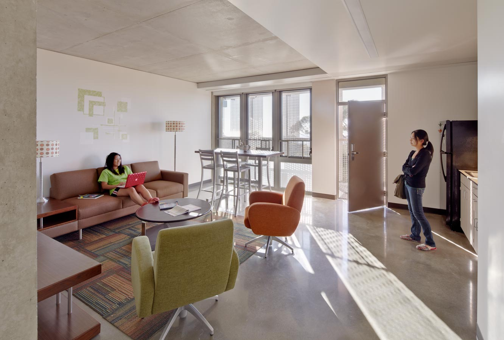
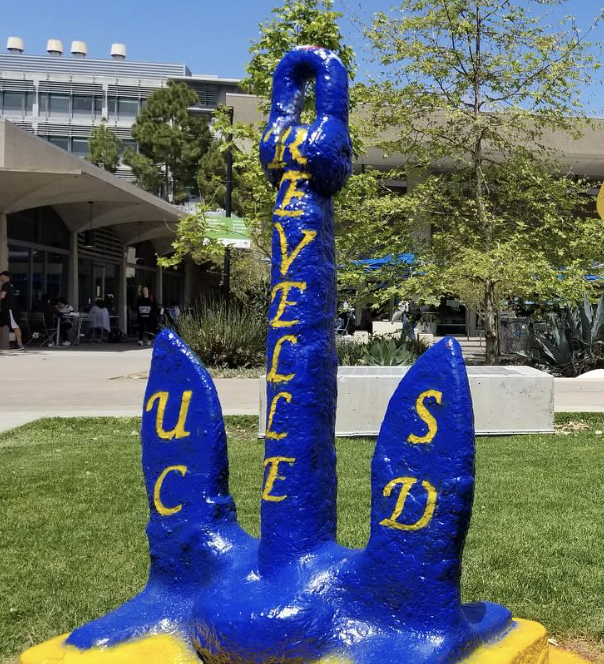
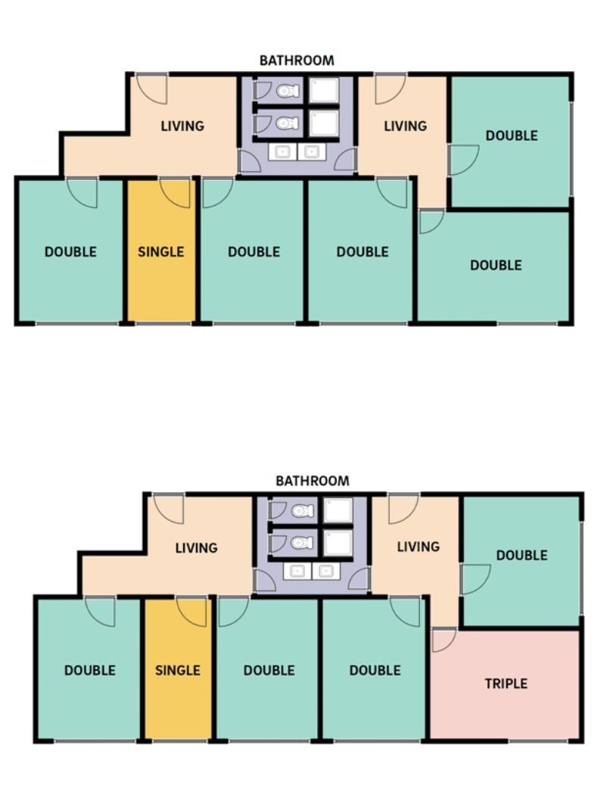
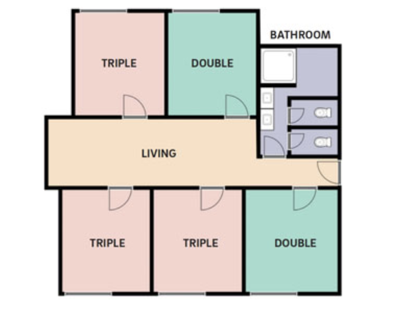

Revelle College is the oldest of UC San Diego’s residential colleges,
founded in 1964 and named after oceanographer Roger Revelle. It is known
for its rigorous general education curriculum, which emphasizes a strong
foundation in the sciences, humanities, arts, and languages, aiming to
develop well-rounded scholars prepared for complex global challenges.
The college is home to a diverse community of over 5,000 undergraduates
and fosters academic excellence, personal growth, and community
engagement within a supportive environment.
General Education Requirements
Revelle students must complete a “liberal arts” curriculum:
Humanities: 5 courses
Math: 2 courses and 1 calculus course
Natural Science: 2 courses
Social Science: 2 courses
Fine Arts: 1 course
Language: 4 quarters of the same language (placement test may apply)
Tips
Create a four-year academic plan! The extensive Revelle GE curriculum
can start to feel impossible to complete alongside your major
requirements, but having a general idea of your courses makes the task
much less daunting. If you're struggling to complete a plan on your
own, Revelle offers workshops dedicated to helping students outline
their four years at UCSD.
Housing
First-years are placed in the residence halls including, Argo, Blake, or
the Fleets (Atlantis, Beagle, Challenger, Discovery, Galathea, and
Meteor Hall). Each first-year suite consists of 12-16 residents with
shared bathrooms and common rooms. Everyone has access to the communal
washers/dryers, study rooms, and Wifi.
Second-years are housed in the Keeling Apartments, a huge upgrade from
the residence halls. In addition to the residence hall amenities,
students have access to the in-suite kitchens, the Keeling gym, and the
rooftop garden. Each apartment houses 4-6 students in single or double
rooms.
Tips
Be open-minded when meeting your new roommates! They may end up being
your best friends on campus.
When it's time to create your Living-Suite Agreement (LSA) with your
suitemates, be sure to be open and honest about any boundaries you may
have. Expressing any concerns early on will help the suite avoid
conflict down the line.
Argo Hall

Keeling Apartments

Revelle Anchor

Argo/Blake Hall Suite Layout

The Fleets Suite LayoutKeeling Apt. Layout
Dining
Revelle's dining hall, 64 Degrees, serves American, Mexican, and Asian
cuisine plus an additional menu with allergen-free options. Just next
door, Roger's Coffeehouse serves delicious drinks and snacks for your
morning walks to class. Roger's Market is a convenient walk-out grocery
store that only requires a quick scan to enter, grab your groceries, and
leave- a perfect option for students on the go.
Tips
Some stations at the dining hall, like Triton Grill and Taqueria, get
very busy around dinner time. Many revellians recommend ordering at
least 50 minutes ahead of time, despite the estimated times listed on
the Triton To-Go app. Wait times can get very long during the fall and
winter quarters , so it's best not to underestimate them. The local
sushi restaurant, Umi, may require extra planning as wait times can
reach 2-3 hours.